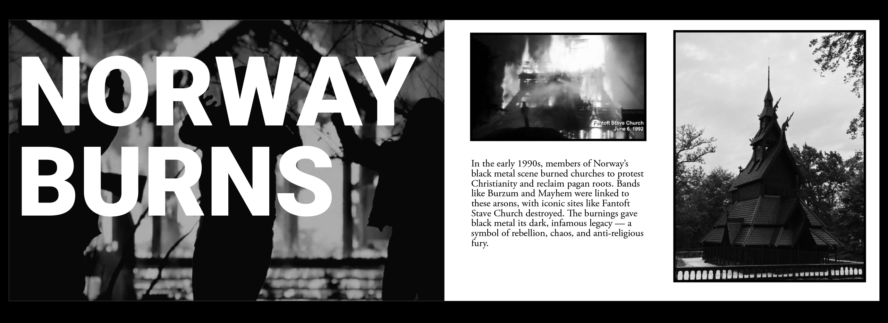
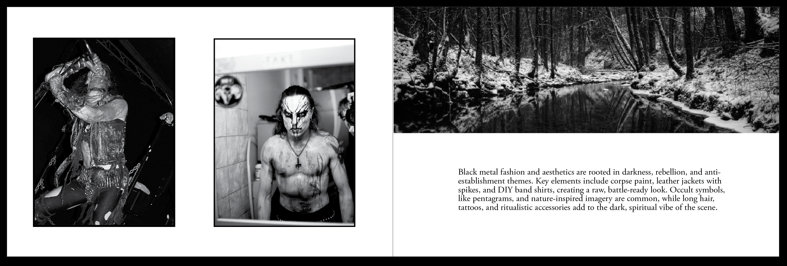

A Bried Glimpse Indy Zine
‘A Brief Glimpse’ is an indie zine that explores a variety of countercultures, offering snapshots into the communities, aesthetics, and attitudes that exist on the fringes. This issue dives into the world of black metal, examining its music, visual style, and cultural impact. Through a mix of imagery, text, and design, the zine captures the raw intensity and underground ethos of the scene, giving readers an intimate look at a subculture often shrouded in mystery.

This is a cross page spread exmanding on some of the themes of black metal counter-culture

A quote from an influential balck metal atist, showcasing use of cross page typography

The final pages were dedicated to showcasing black metal style and featured 16 pictures of famous artists